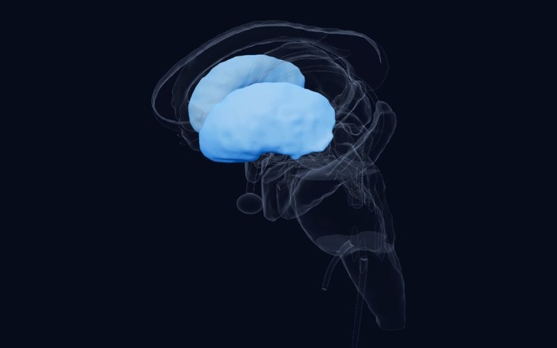

Boletín · Edición 5 · 6 de noviembre de 2026
¿Dónde comienza? Cromosomas, primeros movimientos y edad de aparición
¿Dónde comienza una condición psiquiátrica? Este número examina tres tipos de comienzo: una diferencia poco reconocida en los cromosomas sexuales, patrones de movimiento en la infancia y la edad en que aparece la depresión por primera vez. En el área de neurociencia, la pregunta va en la dirección opuesta: ¿cómo llega un solo pulso magnético aplicado sobre el cuero cabelludo a neuronas individuales en lo profundo del cerebro?
Los estudios de esta semana
BRevisiónBiological Psychiatry2026
Aneuploidías de cromosomas sexuales: uno de cada 400, y poco reconocidas en psiquiatría
Revisión integradora de estudios epidemiológicos, conductuales, de neuroimagen y genómicos
DetallesCerrar
Hallazgo
La pérdida o ganancia de uno o más cromosomas X o Y afecta aproximadamente a 1 de cada 400 personas, y esta revisión reúne los últimos trabajos epidemiológicos, conductuales, de neuroimagen y genómicos. En relación con su prevalencia, estas condiciones presentan una penetrancia en varios diagnósticos psiquiátricos que a menudo excede la de factores de riesgo genéticos mejor reconocidos, con una carga de síntomas considerable por debajo de los umbrales diagnósticos. Tienen grandes efectos sobre el tamaño total del cerebro y remodelan la anatomía regional, y los efectos regionales de la dosificación de X e Y están notablemente correlacionados. Los estudios genómicos apuntan a los gametólogos X-Y como genes altamente sensibles a la dosificación que pueden moldear efectos más amplios sobre la expresión génica.
Por qué es importante
Lo suficientemente comunes para encontrarse en la clínica, estas condiciones merecen más atención por derecho propio, y los autores también las proponen como modelos genéticos prioritarios para la psiquiatría más amplia. Hacen un llamado a nuevos registros construidos en estrecha colaboración con las familias.
Limitación
Una revisión narrativa que no genera nuevos datos, y su resumen no proporciona estimaciones agrupadas.
Pavlinek A, Davis S, Ingason A, et al. Sex Chromosome Aneuploidies and the Brain: from Neurodevelopmental Risk to Fundamental Biology. Biological Psychiatry. 2026. doi:10.1016/j.biopsych.2026.10.021
BRevisión sistemáticaEuropean Child & Adolescent Psychiatry2026
Lo que dicen los patrones de movimiento temprano sobre el TDAH posterior
19 estudios de 1,469 registros
DetallesCerrar
 Atlas
Atlas
Hallazgo
Esta revisión sistemática PRISMA exploró cómo se relaciona la actividad motora temprana con rasgos o diagnósticos de TDAH posteriores; 19 de 1,469 registros cumplieron los criterios, utilizando actigrafía o acelerometría, informes de los padres o de múltiples informantes, o una combinación de ellos. En todos los métodos, una actividad temprana aumentada o poco regulada se asoció de manera consistente con rasgos o diagnóstico de TDAH posteriores, con señales detectables desde la lactancia y la primera infancia. Un subconjunto de estudios vinculó, en cambio, retrasos motores u otras atipicidades motoras con rasgos de TDAH posteriores. Los enfoques multi-informantes y multimodales dieron generalmente la señal más robusta.
Por qué es importante
Sugiere que el comportamiento motor temprano podría ser un hilo útil en el seguimiento del desarrollo y que tanto un exceso como una falta de movimiento pueden importar. Los autores también señalan que el campo se apoya en un lenguaje centrado en el déficit y en puntos finales exclusivamente diagnósticos, y abogan por marcos dimensionales.
Limitación
Su resumen no proporciona tamaños del efecto, y estas asociaciones no convierten la actividad temprana en un marcador diagnóstico.
Ruffer HC, Jones EJH, Meaburn EL. Infancy & early childhood motor activity levels as predictors of attention-deficit/hyperactivity disorder: a systematic review of cross-sectional and longitudinal studies. European Child & Adolescent Psychiatry. 2026. doi:10.1007/s00787-026-03235-9
CEstudio transversalPsychological Medicine2026
La depresión de inicio en la juventud y la depresión de inicio en la adultez no dibujan el mismo mapa
Patrones de grosor cortical ENIGMA con conectoma, neurotransmisor, transcriptoma y atlas mitocondriales; sin recuento de participantes en el resumen
DetallesCerrar
 Atlas
Atlas
Hallazgo
Los autores tomaron patrones ENIGMA del cambio de grosor cortical en la depresión mayor de inicio juvenil y de inicio en la edad adulta, y los compararon con el conectoma estructural y con atlas de neurotransmisores, de expresión génica y mitocondriales. El conectoma restringió los cambios en ambos grupos, con más fuerza en el inicio en la edad adulta. Los epicentros probables diferían: la corteza prefrontal lateral en el inicio juvenil, y la corteza orbitofrontal junto con el giro cingulado anterior y medio en el inicio en la edad adulta. Los vínculos con categorías de genes y con características mitocondriales aparecieron solo en el inicio en la edad adulta.
Por qué es importante
Aporta un ángulo biológico a la idea de que la edad de inicio es una fuente clave de heterogeneidad en la depresión. El epicentro prefrontal en la juventud conviene leerlo junto con la maduración tardía de esta región; ese vínculo es nuestra interpretación, no la de los autores.
Limitación
Un análisis de mapas a nivel de grupo y de atlas de referencia en lugar de pacientes individuales, por lo que no puede mostrar causas ni aplicarse a una sola persona.
Xu S, Cui S, Shi X, et al. Neurobiological factors related to differential cortical abnormalities in youth-onset and adult-onset major depressive disorder. Psychological Medicine. 2026. doi:10.1017/s0033291726105777
CEstudio experimentalProceedings of the National Academy of Sciences (PNAS)2026
El pulso llega a lo profundo: neuronas individuales bajo TMS
4 pacientes neuroquirúrgicos, 185 neuronas individuales
DetallesCerrar

Atlas
Hallazgo
En cuatro pacientes neuroquirúrgicos, se registraron 185 neuronas individuales mediante microelectrodos intracraneales mientras se aplicaban pulsos únicos de TMS a la corteza prefrontal dorsolateral izquierda. El cuarenta y seis por ciento de las neuronas respondió de manera sincronizada con el pulso (26% solo facilitadas, 19% solo suprimidas, 1% ambas), en estructuras corticales y subcorticales profundas de ambos lados, incluidos el putamen y el tálamo. Las neuronas estriatotalámicas inhibidoras supuestas tendieron a aumentar su disparo a partir de unos 8 ms, con un máximo en torno a 80 a 100 ms. Las neuronas excitatorias supuestas y las áreas límbicas fueron suprimidas con un curso temporal más lento que se prolongó hasta aproximadamente 1,000 ms.
Por qué es importante
Ofrece un mecanismo celular candidato para un tratamiento antidepresivo establecido: aumentar el disparo de las neuronas inhibidoras en las redes de control ejecutivo mientras se suprime el impulso excitatorio límbico. También muestra, a nivel de células individuales, cómo un objetivo cortical superficial puede alcanzar estructuras profundas.
Limitación
Solo cuatro pacientes y pulsos únicos en lugar de los protocolos repetidos utilizados en el tratamiento; el hallazgo a nivel de red se basa en un solo participante.
Dickey CW, Hassan U, Kawasaki H, et al. Transcranial magnetic stimulation to the dorsolateral prefrontal cortex modulates single-neuron activity in humans. Proceedings of the National Academy of Sciences (PNAS). 2026. doi:10.1073/pnas.2610803123
Estructura de la semana

Tronco del encéfalo
Complejo parabraquial
El cruce de las señales de peligro procedentes del cuerpo: transmite información visceral, gustativa, nociceptiva, térmica y sobre la falta de aire a la amígdala, el hipotálamo y la ínsula.
Del libro
Que la PFC madure tan tarde en términos anatómicos justifica el eje de psiquiatría infantil y adolescente del libro: casi toda la línea del desarrollo descrita en este libro es en realidad la historia de cuándo, y hasta qué punto, la PFC puede regular los sistemas primitivos.
— La nuez verde en el diván, capítulo 20: correlación neuroanatómica (original en turco: Divandaki Yeşil Ceviz)
Una pregunta para los lectores
Cuando una familia se preocupa por un bebé muy activo, ¿qué le dice: que conviene observarlo o que es demasiado pronto para hablar de TDAH?
Puede enviar su respuesta por correo electrónico:
hello@thefoldedmind.comReferencias
- Pavlinek A, Davis S, Ingason A, et al. Sex Chromosome Aneuploidies and the Brain: from Neurodevelopmental Risk to Fundamental Biology. Biological Psychiatry. 2026. doi:10.1016/j.biopsych.2026.10.021
- Ruffer HC, Jones EJH, Meaburn EL. Infancy & early childhood motor activity levels as predictors of attention-deficit/hyperactivity disorder: a systematic review of cross-sectional and longitudinal studies. European Child & Adolescent Psychiatry. 2026. doi:10.1007/s00787-026-03235-9
- Xu S, Cui S, Shi X, et al. Neurobiological factors related to differential cortical abnormalities in youth-onset and adult-onset major depressive disorder. Psychological Medicine. 2026. doi:10.1017/s0033291726105777
- Dickey CW, Hassan U, Kawasaki H, et al. Transcranial magnetic stimulation to the dorsolateral prefrontal cortex modulates single-neuron activity in humans. Proceedings of the National Academy of Sciences (PNAS). 2026. doi:10.1073/pnas.2610803123
Este boletín tiene fines educativos y no constituye consejo médico; consulte a su médico para las decisiones de diagnóstico y tratamiento. Los resúmenes están escritos con nuestras propias palabras a partir de los resúmenes de los estudios y de los textos completos de acceso abierto; consulte el artículo original para los detalles y los resultados definitivos.
Nivel de evidencia (como en el atlas): A consorcio amplio, metaanálisis o decisión regulatoria; B estudios replicados o caso clásico; C estudio único o pionero. Las prepublicaciones no han sido revisadas por pares.